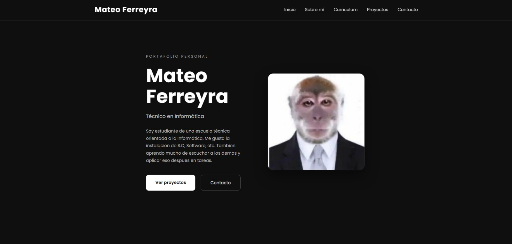
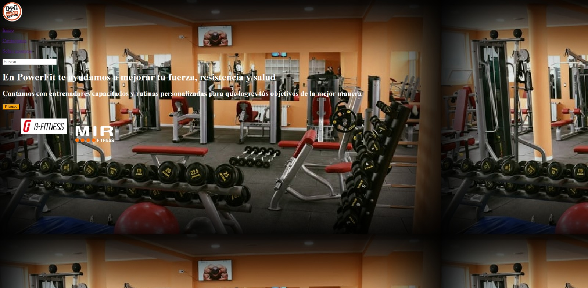

Formación Académica
- Colegio Provincial Dr. Ernesto Guevara (En curso)
- Practicas Profesionalizantes
Soy Mateo Ferreyra estudiante de una escuela técnica orientada a la Informática de Rio Grande. Me gusta la instalacion de S.O, Software, etc. Tambien aprendo mucho de escuchar a los demas y aplicar eso despues en tareas.

Actualmente estoy cursando el último año de la escuela Guevara. Me interesa todo lo que tenga que ver con computadoras, el soporte técnico, el mantenimiento de computadoras y las redes. Me considero una persona responsable, curiosa y que si le interesa algo aprende rapido.
| Tecnología | Nivel |
|---|---|
| Solucion de errores | Intermedio |
| Optimizacion de Software | Intermedio |
| Instalacion de Sistemas Operativos | Avanzado |
| Configuracion de Sistemas Operativos | Avanzado |
| Armado de equipos informaticos | Intermedio |
Desarrollo de proyectos escolares de la materia Programacion, mantenimiento de computadoras, Asistencia al usuario y resolución de problemas informáticos.

Sitio web responsive desarrollado con HTML y CSS.
Parte del TPI.

Pagina web creada para programacion.